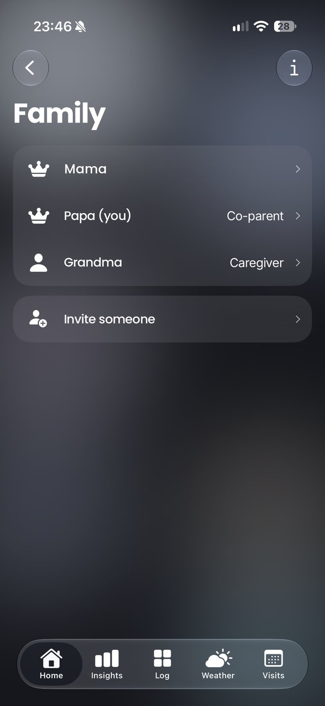
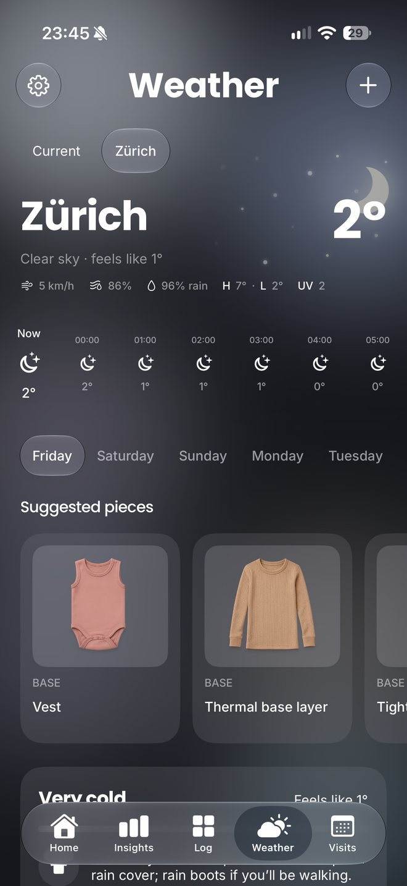

La notte, in due tocchi.
Nanna e risveglio su un unico quadrante, prima che qualcuno abbia fatto il caffè.

Sonno, poppate, pannolini, pappe e traguardi in un unico diario che tutta la famiglia condivide — abbastanza veloce da usare anche nel cuore della notte.
Un unico diario che tutta la famiglia condivide.


Nanna e risveglio su un unico quadrante, prima che qualcuno abbia fatto il caffè.
Ogni alimento assaggiato, spuntato. Una ricetta per ogni fase.

L’altro genitore, un nonno, la tata — tutti vedono la stessa giornata mentre accade.

Grafici tranquilli di ciò che hai registrato, e la sua storia, mese dopo mese.
Il meteo dove sei, e cosa fargli indossare oggi.

Ogni pagina di Kora Baby, in tre gruppi. Scorrile con un tocco.
Registra offline. Arriva più tardi.
Ognuno in chiaro e in scuro.
Kora Baby registra; non interpreta mai un numero per te. Non è un consiglio medico. Ogni traguardo ha la sua finestra: alcuni bambini si prendono il loro tempo, altri saltano un passaggio — entrambe le cose rientrano nell’ordinario. La storia e i record fanno parte di Kora Premium. Meteo da Apple Weather.
Tutto ciò che registri è gratis, e lo è anche rileggerlo fino al primo giorno.
Kora Premium, gratis, per sempre — confermato in Kora Baby e legato alla famiglia. Non una prenotazione via email.
Fuori dalla Svizzera, 4.99 al mese o 49.99 all’anno nella valuta del tuo App Store.
Siamo mamma e papà. Kora Baby è nata come app per la nostra famiglia. Volevamo un posto dove annotare i piccoli dettagli della giornata del nostro bambino, così da seguirli insieme alle persone che si prendono cura di lui.